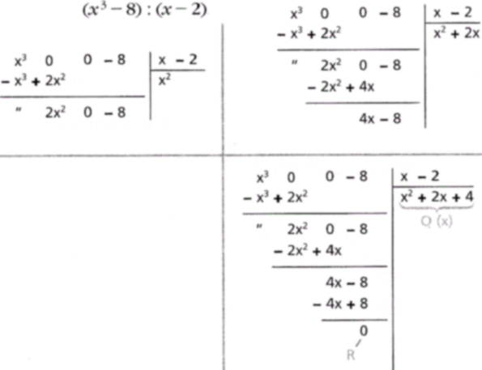

Divisibility of polynomials
The divisibility properties and definitions relating to integers extend to polynomials.
Proposition 4.5. (Algorithm for the division). Let f(x) and g(x) ∈ 𝕂[x] two polynomials with g(x) ≠ 0. Then there exist and are uniquely determined two polynomials q(x) and r(x) ∈ 𝕂[x] such that
f(x) = g(x) · q(x) + r(x), with ∂r(x) < ∂g(x) or r(x) = 0.
Proof. If f(x) = 0 or ∂r(x) < ∂g(x) is enough to set q(x) = 0 and r(x) = f(x). So suppose ∂g(x) ≤ ∂f(x). We proceed by induction on n=∂f. If n = 0 (hence also ∂g(x) = 0), we have f(x) = a0 and g(x) = b0, with a0,b0 ∈ 𝕂, thus
f(x) = a0 = (a0⋅b0-1) b0 + 0
in this case r(x) = 0 and q(x) = a0⋅b0-1.
We suppose the theorem true for polynomials of degree < n and prove it for ∂f = n. Then ∂f = n ≥ ∂g = m. Let
f(x) = a0 + a1 x + ··· + an xn, g(x) = b0 + b1 x + ··· + bm xm,
we put
h(x) = f(x) − an bm-1 xn−m g(x)
The degree of h(x) is smaller than n, so we may apply to h(x) the induction hypothesis. So there exist q1(x), r1(x) such that
h(x) = q1(x) g(x) + r1(x), r1(x) < m or ∂r1(x) = 0.
Then
f(x) − an bm-1 xn−m g(x) = h(x) = g(x) q1 + r1 (x)
And it is enough to take r(x) = r1 (x) and q(x) = q1 (x) + (an bm−1)xn−m.
As to the uniqueness of division, notice that if f(x) = g(x) · q1 (x) + r1 (x) = g(x) · q2(x) + r2 (x) such that ∂ri(x) < ∂g(x) or ri(x) = 0 with i = 1, 2, then we would get
g(x)(q1(x) − q2(x)) = (r2(x) − r1(x))
If it is the case that q1(x) − q2(x) ≠ 0, the left-hand side would have a greater degree than the second one, which is not possible. So we must have q1 (x) = q2 (x), which also implies r2(x) = r1(x).□
Definition 4.6. We say that a polynomial g(x) divides a polynomial f(x) with f,g ∈ 𝕂[x] and we write g(x)| f(x) if there exists a polynomnial q(x) ∈ 𝕂[x] such that
f(x) = g(x) · q(x)
Definition 4.7. An element f(x) ∈ 𝕂[x] is said invertible if there exists a polynomial g(x) ∈ 𝕂[x] such that f(x) g(x) = 1.
It is obvious from the relation governing the degrees of polynomials that the only ivertible elements of 𝕂[x] are non-null constants. (non-null elements of 𝕂), pq = 1 just isn't possible because the lhs is 0 or has positive degree while the rhs has degree 0. This means that 𝕂[x] is not a field.
Example 4.8. Long division of x3 − 8 by x − 2 yields
